O bordado atravessa culturas.
Em diferentes épocas e lugares, pontos e padrões se tornaram formas de expressão, ornamento e memória.
Do primeiro uniforme ao presente que fica. Bordamos identidade em peças para seu negócio, para você e para os momentos que merecem cuidado.
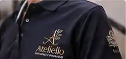
01 / PARA QUEM EMPREENDE Para seu negócio. Uniformes, jalecos, aventais, polos e peças que fazem sua marca ser reconhecida. Explorar uniformes e empresas ↗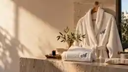
02 / PARA MOMENTOS QUE IMPORTAM Para você. Roupões, toalhas, enxovais, casamento, presentes e detalhes que contam histórias. Explorar presentes e bordados ↗ Ambientações ilustrativas das possibilidades de personalização · conheça os bordados reais abaixo.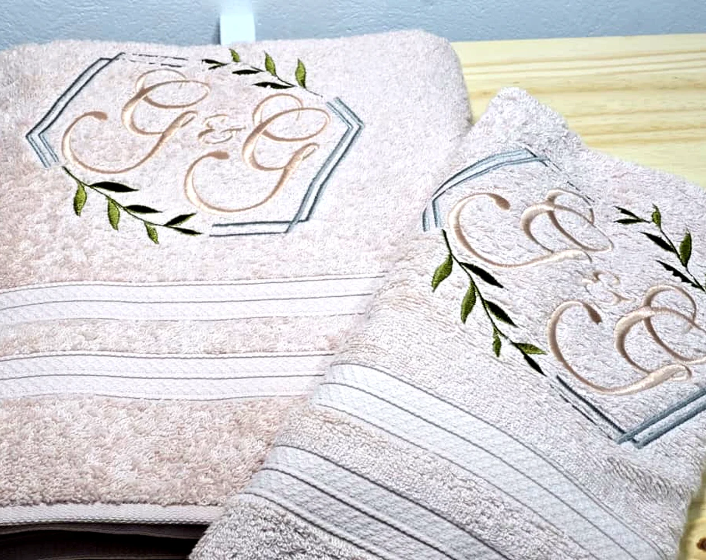
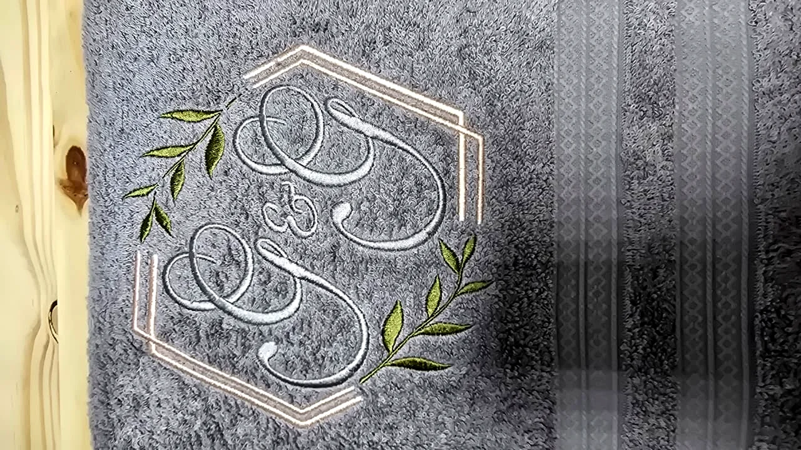
Bordado real · detalhe ampliadoA polo que apresenta sua empresa. O jaleco que inspira confiança. O roupão para desacelerar. O kit que marca um casamento. A toalha do DJ. O nome do personal que acompanha cada treino.
Nossa matéria-prima não é apenas tecido: é a intenção de quem escolhe cada detalhe.
Conheça nossa forma de personalizar ↗Não é sobre preencher um catálogo. É sobre encontrar a peça, o tecido e a ocasião em que sua ideia ganha vida.
Roupões, toalhas de banho, lavabo e spa com nomes, iniciais ou monogramas.
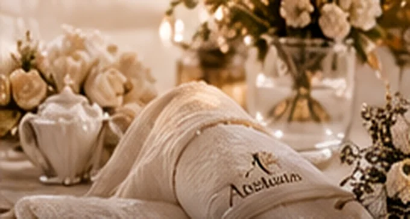
Kits de casamento, roupões de casal, toalhas e guardanapos personalizados.
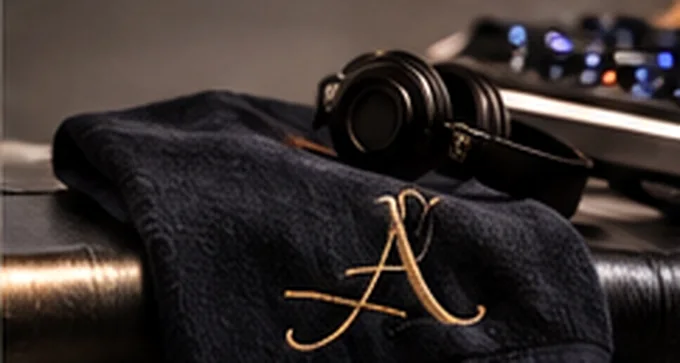
Toalhas de cabine, patches, bonés e peças para artistas e equipes.
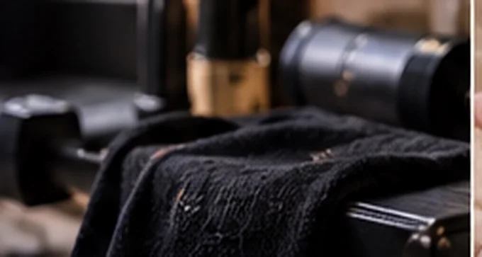
Toalhas de treino, bonés, peças esportivas e presentes para professores.
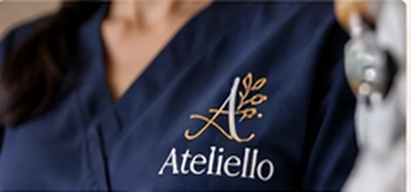
Jalecos, scrubs, polos e identificação profissional.
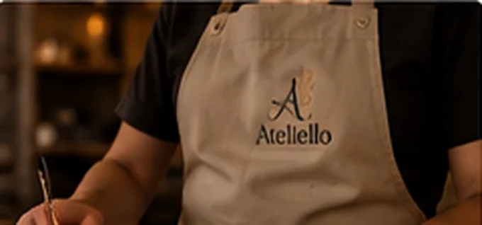
Aventais, dólmãs, camisetas e bonés para pequenos negócios.
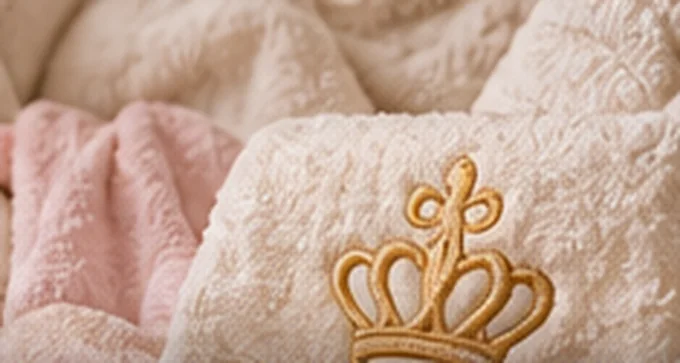
Toalhinhas, mantas, roupões e peças infantis bordadas.
Polos, camisas, jaquetas e roupas profissionais com bordado.
Imagens de inspiração ilustram aplicações possíveis. Os bordados reais são identificados no portfólio.
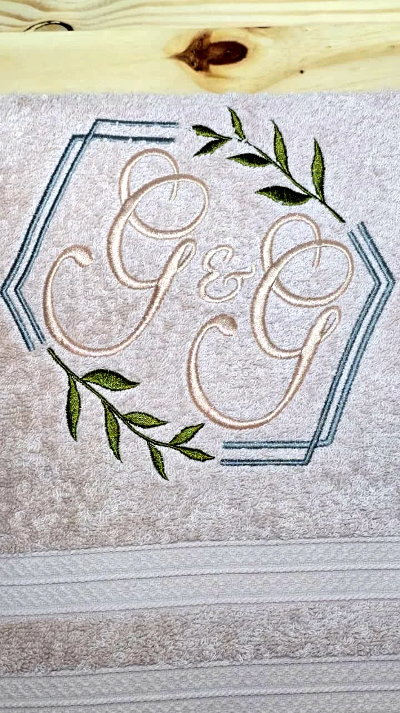
O fio não precisa dominar a peça para transformá-la.Algodão, piquet, brim, felpudo, linho e outras superfícies pedem decisões diferentes. Você escolhe o que imagina; nós avaliamos a técnica, a composição e o acabamento.
Escolha a ocasião, combine diferentes peças, defina seu bordado e conte o que imagina. Nosso atendimento recebe seu projeto organizado e orienta as próximas escolhas.
Criar meu orçamento ↗Um nome, um evento, um negócio, um momento especial.
Roupões, toalhas, uniformes, acessórios e outros itens.
Nome, iniciais, logo, cor, posição e quantidades.
Envie seu projeto pelo WhatsApp e confirme a produção.
Uma pequena pausa na navegação para olhar o bordado além do produto.
Em diferentes épocas e lugares, pontos e padrões se tornaram formas de expressão, ornamento e memória.
Iniciais e marcas bordadas transformam peças de uso cotidiano em objetos reconhecíveis, pessoais e afetivos.
Hoje o bordado une tradição e personalização em uniformes, enxovais, arte, esporte e celebrações.
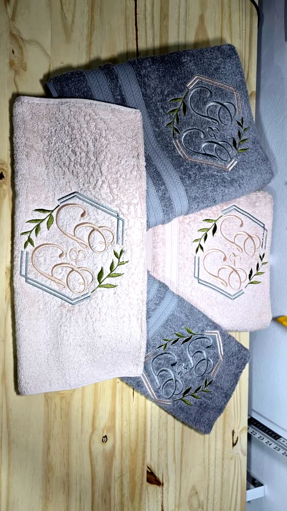
Personalização não é apenas escolher um nome. É encontrar o tecido, a proporção e o detalhe que fazem sentido para você.
Quero criar com a Ateliello ↗Atendimento online. Envio e retirada programada conforme disponibilidade e confirmação.